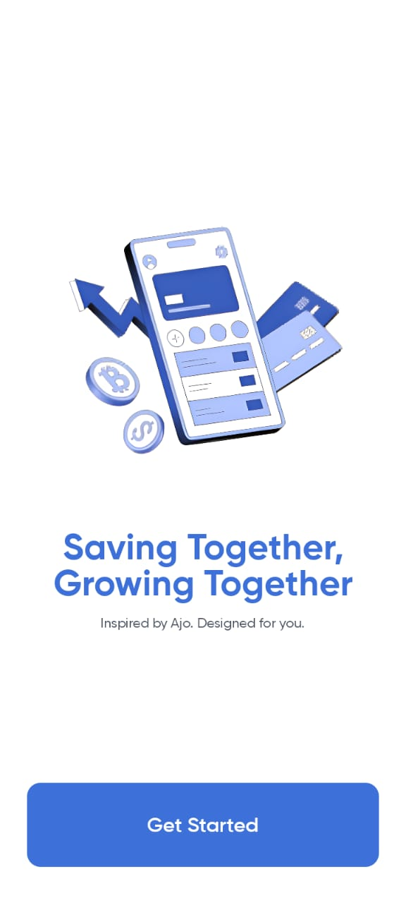
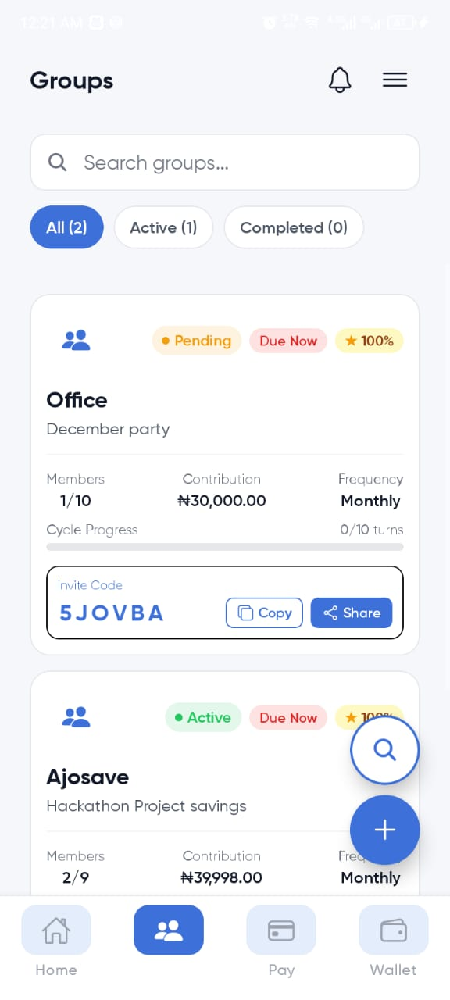
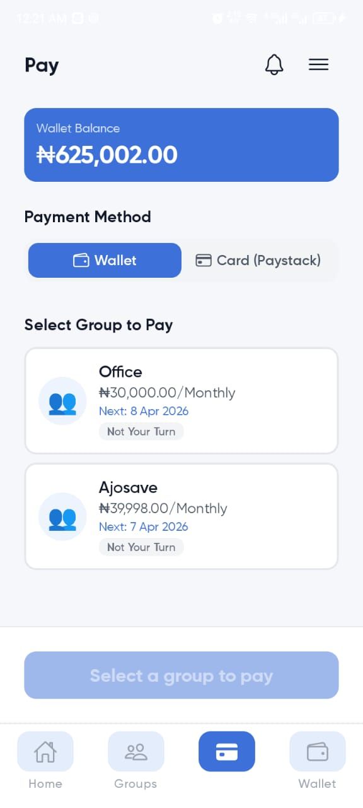
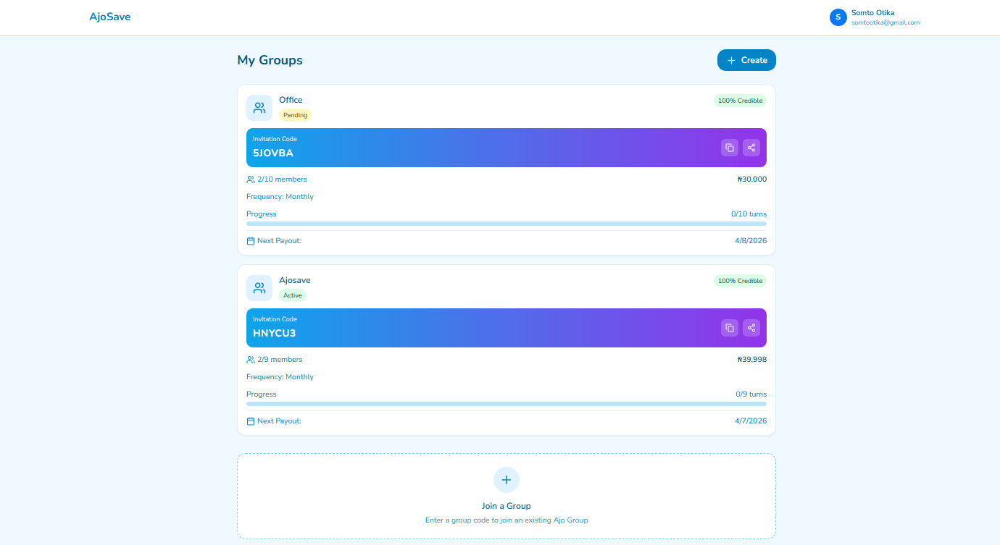
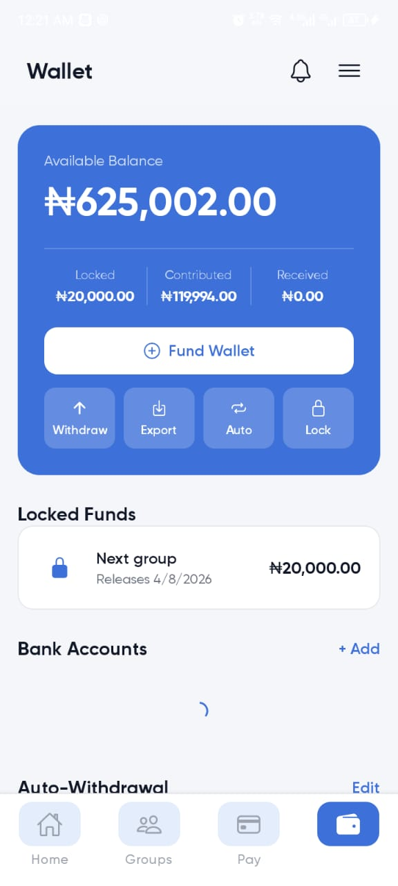
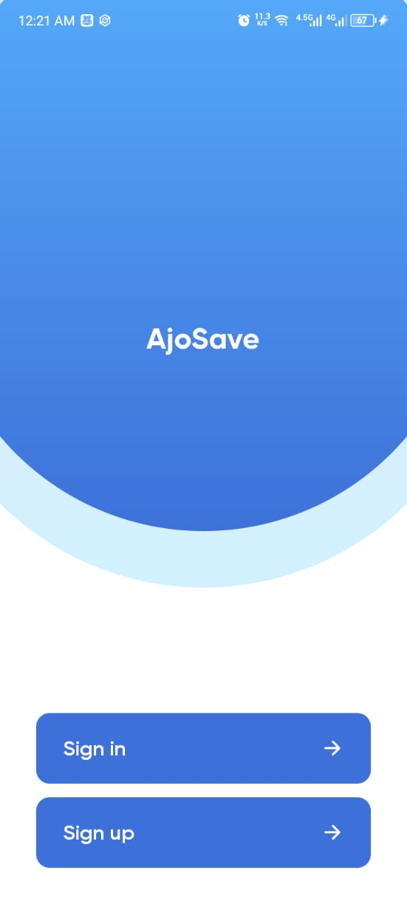
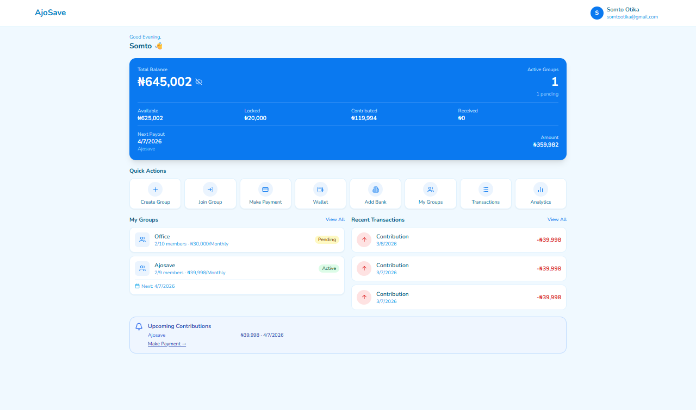

For generations, Nigerians have saved money together the same way — a group of people, a fixed contribution, and everyone taking turns collecting the pot. It's called Ajo, Esusu, or Adashe, and it runs entirely on trust and a notebook. One dishonest treasurer can wipe that out overnight. AjoSave keeps the tradition and removes the risk: every naira is tracked, every turn is automatic, and no single person ever holds everyone else's money.
The mobile app mirrors everything on the web — same groups, same wallet, same rules, just in your pocket.

Everything — groups, wallet, contributions, payouts — works identically whether someone opens the mobile app or logs into the web dashboard.
Phone-number sign-in, wallet balance at a glance, and reminders that land as SMS or push notifications — built for people who save on the go.
A fuller view for whoever's organizing the group: who's paid, who's due, and a complete history nobody can quietly edit.
Most Nigerians outside the formal banking system still save money — just not in a bank. Millions belong to Ajo groups: a set number of people agree to contribute the same amount on the same schedule, and each cycle, one member collects everything everyone put in. It's how market traders fund inventory, how artisans cover emergencies, how students pool rent.
The problem was never the idea. It was the execution: a notebook, a WhatsApp group, and one person — the treasurer — trusted to hold everyone's cash. When that person disappears, forgets, or simply lies about who's paid, there's no record to fall back on. The whole group loses, and there's rarely anywhere to turn.
AjoSave keeps the social structure that already works and replaces the one weak point — a single trusted person — with a system where the record can't be argued with.
Say five friends start a group: everyone puts in ₦10,000 every month, and each month, the full ₦50,000 pot goes to a different person until everyone's had a turn. Here's what AjoSave does with that:


The first person to join is first to get paid. Order is set the moment you join — no favoritism, no arguments later.
On the due date, each member's contribution moves out of their wallet automatically. Reminders go out by SMS and push, days ahead.
The moment all five contributions land, that cycle's turn-holder receives the full pot — instantly, with everyone able to see it happened.
Getting paid early doesn't excuse you from paying later. Everyone keeps contributing until all five turns are complete.

This is the part that stops the classic Ajo fraud: collect your payout, then vanish. AjoSave splits every member's money into two buckets, visible right in the wallet:
Money that's genuinely yours to spend or withdraw right now — not tied up in any group.
Money you've committed — either contributions you've paid in, or a payout you've received but haven't "earned the right" to touch yet, because you still owe future contributions.


Once you've received your turn, your payout stays locked until you finish paying everyone else. Leave early, and whatever you owe is deducted straight from that locked balance before you see another naira of it. There's no version of this where someone gets paid and disappears — the money physically won't let them.
Life happens — people run late on payments for real reasons. AjoSave's response scales with how long it's been ignored, not how it looks on day one. Pay at any point, and everything reverses immediately; nothing here is designed to stick once a debt is settled.
Fully paid up. Can join or create groups, withdraw freely, and receive payouts without restriction.
An SMS and in-app nudge, plus a 24-hour grace window to pay with zero penalty and no record left behind.
Can't join or start new groups until resolved (existing group is unaffected). A small penalty applies, and it's now on record.
Group members can see the default so they can protect themselves, withdrawals lock, and — with the consent every user agrees to at signup — it's reported to credit partners.
The point isn't to punish people — it's to make sure the group never carries the cost of one person's default. Every escalation step exists because the honest members of a five-person group shouldn't lose money because the sixth stopped answering their phone.
Not every missed payment is someone dodging their group — sometimes it's rent, an emergency, or a bad week, and the money just isn't there yet. Treating that the same as fraud punishes people for being human. So before any penalty kicks in, AjoSave offers a way out: an instant micro-loan, sized to exactly what's owed, based on how reliable that person has already been.
Say it's due today and the wallet's empty. If the person qualifies, the app offers a small loan on the spot — approved in seconds, no paperwork. It covers the contribution, the payment goes through on time, and the loan quietly repays itself out of that person's next payout. No default, no black mark, no group left short.
Banks decide who gets credit using salary slips and account history — which locks out most of the people who actually keep Ajo running: market traders, artisans, drivers. AjoSave builds a different kind of file, quietly, in the background: every on-time contribution, every completed group, every emergency loan repaid without issue, all rolled into one score.
Over time, that score becomes something a bank never gave these users a chance to build — a real, evidence-backed answer to "can this person be trusted with money?" It's the foundation the roadmap's future lending features are built on.

AjoSave runs as a single monorepo powering both the React Native mobile app and the web dashboard from shared logic — so a rule enforced on the rotation engine is never accidentally different on one platform. Everything's backed by OTP + BVN verification and a ledger where nothing is ever silently edited, only appended.
Tracks turn order, contribution cycles, and payout eligibility automatically — no admin manually deciding whose turn it is.
Splits every balance into Available and Locked, enforcing that payouts stay committed until obligations are met.
Automatically escalates or reverses account status based on days-late, with full audit logging of every action taken.
Instant eligibility checks against credit score, account age, and default history, with auto-repayment from future payouts.
Low-friction phone sign-in backed by KYC, so identity is verified without slowing down onboarding.
A weighted score built from on-time rate, total saved, groups completed, and resolved defaults.
What's live today is the foundation — the rotation, escrow, and accountability systems that everything else depends on. The roadmap builds outward from there:
Real users, real market associations, real money moved — validating the core rotation and trust model.
Credit scores mature into real loan products, backed by microfinance partners.
Bank partnerships, licensing, and support in every major region — not just the big cities.
Esusu, Susu, Stokvel — the same rotating-savings culture exists across the continent, waiting for the same fix.
"The best financial tools don't replace culture — they protect it. AjoSave isn't here to replace Ajo. It's here to make sure it never fails anyone again."
Built for Codefest Africa 2025, AjoSave isn't trying to convince anyone to save differently — millions of Nigerians already do this well. It's trying to make sure the one weak point in a system that's worked for generations stops being the reason it occasionally falls apart.